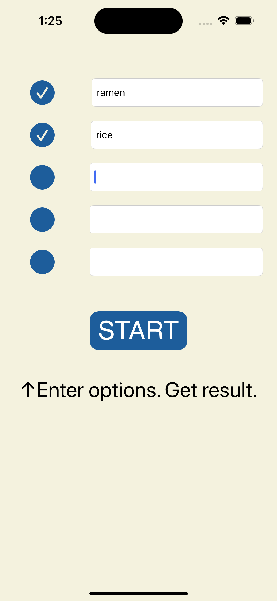

Choice Pal App
Welcome to the Choice Pal app!
Indecisive? Let Choice Pal help you make decisions, big or small, and simplify your life!
With Choice Pal, you can ask questions and get instant answers. Just type in your options, and let the app decide for you!
Download now and let Choice Pal be your trusty decision-making companion.
Check out our terms and privacy policy above.
Contact
If you have any questions, feedback, or feature enhancement requests, feel free to reach out to us:
- Email: ccc2255887711@yahoo.com
- Phone: +886988630559
- Address: No. 186, Qingnian Rd., Wanhua Dist., Taipei City, Taiwan, 108
FAQ
Here are some frequently asked questions:
Q: How do I use Choice Pal to make decisions?
A: Simply type in your options and tap the "START" button. Choice Pal will randomly pick one for you.
Q: Is Choice Pal available for Android devices?
A: Currently, Choice Pal is available for iOS devices only. An Android version may be released in the future.